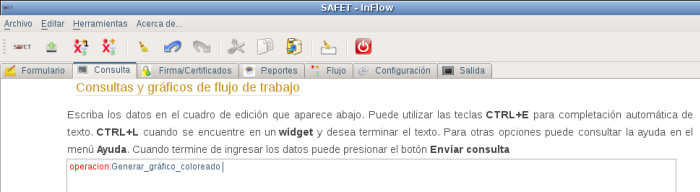
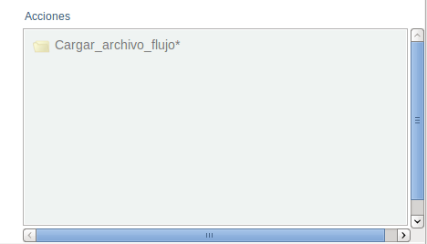
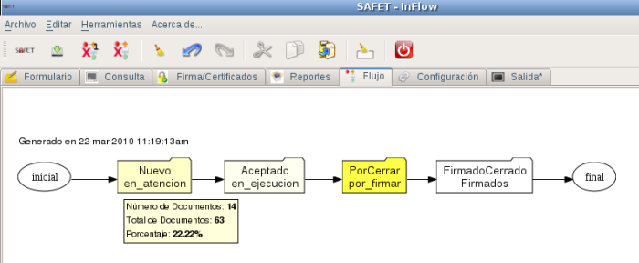

12.4.3.- operacion:Generar_gráfico_coloreado:
Esta operación permite visualizar el flujo de trabajo, donde además muestra estadísticas de los documentos. Para realizar esta operación se requiere hacer click sobre operacion:Generar_gráfico_coloreado en el menú inteligente, en el área de edición debe aparecer la linea de texto operacion:Generar_gráfico_coloreado, (ver figura S3.2.3-1) aparte debe aparece el menú inteligente con los campos relacionados con esta operación (ver figura S3.2.3-2)

figura S3.2.3-1. Área cuadro de edición, selección de la operacion:Generar_gráfico_coloreado

figura S3.2.3-2. Menú inteligente, campos relaciones con la operación Generar_gráfico_coloreado
Requiere montar el documento de flujo de trabajo (este documento debe estar almacenado en el directorio /[home/pbuitrago]/.safet/flowfiles y agregado en el archivo safet.conf en la sección [Widgets]), para la misma se debe hacer click sobre el campo cargar_archivo_flujo* del menú inteligente y debe aparecer en el cuadro de edición la linea de texto Cargar_archivo_flujo: junto con un botón de selección donde se debe marcar el documento de flujo de trabajo a visualizar. (ver figura S3.2.3-3)

Figura S3.2.3-3. Cargar el documento de flujo de trabajo
luego se hace click en el botón enviar, si no presento problema, se muestra en la parte inferior izquierda del cuadro de dialogo el mensaje:
Consulta fue exitosa....ok!
Ver gráfico de flujo de trabajo
(ver figura S3.2.3-4)

Figura S3.2.3-4. Resultado de Generar el gráfico
Este procedimiento genera el flujo de trabajo coloreado.
A cada estado que conforma el flujo de trabajo tiene un mismo color pero con diferente intensidad de acuerdo a la cantidad de documento que se encuentra en cada uno de los estados, el estado que tiene el calor mas intenso contiene mas documentos, al colocar el puntero sobre cualquiera de los estado, aparece un cuadro de dialogo que indica: la cantidad de documento en ese estado, la cantidad de documento en todo el flujo de trabajo y el porcentajes de documentos en ese estado (ver figura S3.2.3-5) el color del flujo de trabajo, se puede cambiar configurado en el archivo safet.conf o en la sección de configuración del sistema.

Figura S3.2.3-5. flujo de trabajo coloreado